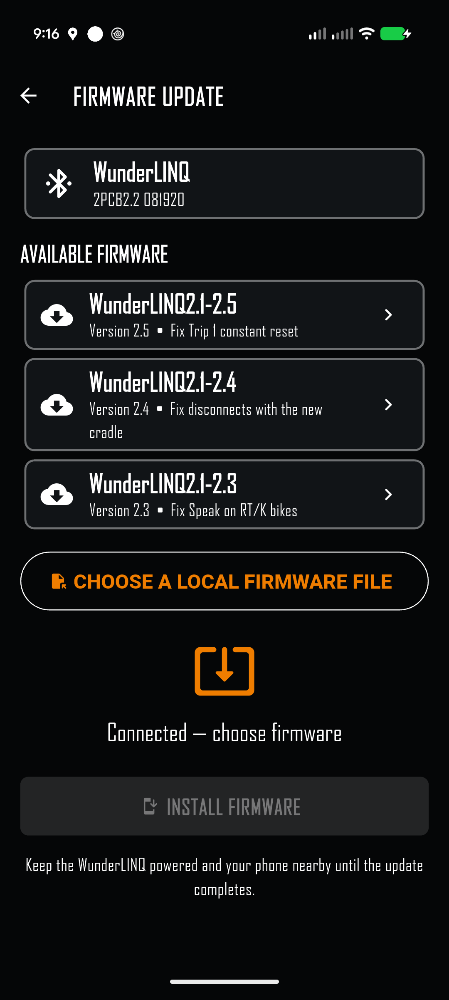
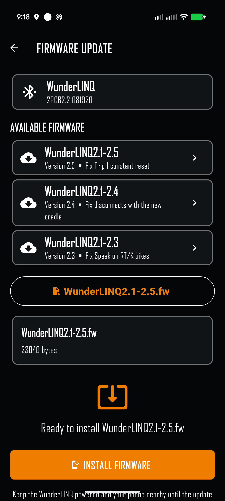
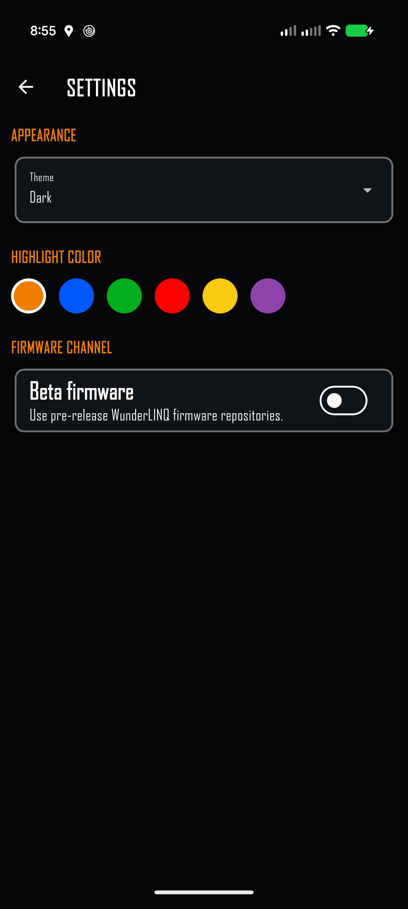
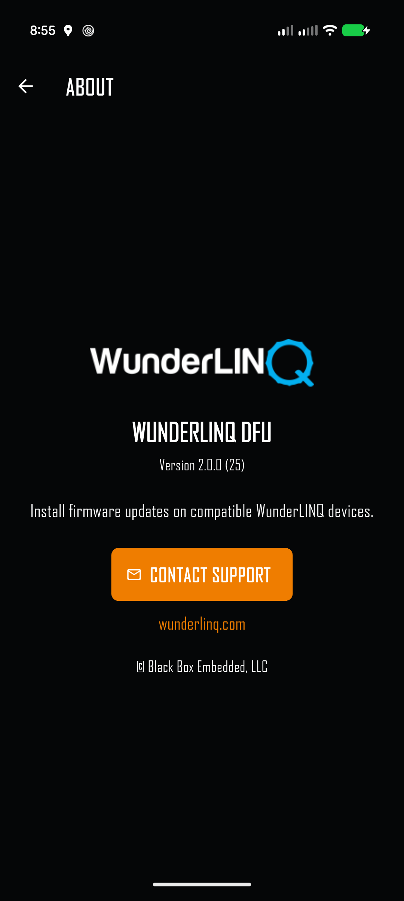

Quick start
WunderLINQ DFU installs firmware on compatible WunderLINQ hardware over Bluetooth. Keep the phone close to the WunderLINQ and keep the motorcycle or other power source stable throughout the update.
- Turn on the WunderLINQ and enable Bluetooth on the phone.
- Open WunderLINQ DFU and grant Bluetooth or nearby-device permission when requested.
- Select the WunderLINQ shown on the discovery screen. The app connects and places it into firmware-update mode automatically when necessary.
- Select a release from Available firmware, or choose a local firmware file supplied by WunderLINQ support.
- Confirm the selected filename and size, then select Install firmware.
- Keep the app in the foreground and do not interrupt power until Update complete appears.
Find your WunderLINQ


The device row shows its name, signal strength, and current state. Ready to enter update mode means the app will request the mode change after connecting. Update mode means the WunderLINQ is already ready to accept firmware.
The signal value is shown in dBm. A value closer to zero generally indicates a stronger connection. If more than one WunderLINQ is powered nearby, move the phone close to the one you intend to update before selecting it.
Automatic mode change
After you select a normally operating WunderLINQ, the app connects, requests a restart into firmware-update mode, waits for the device to reappear with its update services, and reconnects automatically. This transition can take several seconds. Leave the app open while it completes.
Choose firmware
After connection, the Firmware Update screen identifies the attached hardware and loads the matching firmware list from the WunderLINQ repository. Only releases intended for that hardware are offered.


Online release
- Review the entries under Available firmware.
- Select the desired release. The app downloads and validates the firmware file.
- Confirm the filename and file size shown beneath the list.
Local file
Select Choose a local firmware file only when you have received the file from WunderLINQ support or another trusted WunderLINQ source. The app supports the firmware formats used across WunderLINQ hardware generations and validates the file before installation.
Install the update

- Verify that the connected WunderLINQ and selected firmware are correct.
- Select Install firmware.
- Watch the progress indicator and status message. Navigation is disabled while installation is active.
- Wait for the green confirmation and Update complete.
- Allow the WunderLINQ to restart before opening another WunderLINQ app or switching off power.
The app keeps the phone display awake while it is in the foreground. Keep WunderLINQ DFU visible until the update finishes; do not switch to another app for an extended period.
Settings and firmware channel


| Setting | What it changes |
|---|---|
| Theme | Choose Dark, Light, or System appearance. |
| Highlight color | Choose the accent used for selections, progress, and controls. The choices match the other WunderLINQ apps. |
| Beta firmware | Uses pre-release WunderLINQ firmware repositories. Leave this off for normal production updates unless support asks you to enable it. |
Changing the firmware channel is remembered. If a WunderLINQ is already connected, the app reloads the matching catalog immediately.
Hardware and file compatibility
WunderLINQ DFU supports all WunderLINQ hardware generations covered by the official production and beta repositories. The app detects the connected hardware revision, selects its repository, and uses the appropriate update procedure for that device.
Online firmware is the recommended path because the list is selected for the detected hardware. Local files remain available for support cases and offline installation. A firmware file intended for another hardware revision will be rejected rather than installed.
Troubleshooting
| Symptom | What to check |
|---|---|
| No WunderLINQ appears | Confirm the WunderLINQ is powered, enable Bluetooth, grant nearby-device permission, close other WunderLINQ apps, move the phone closer, and select Rescan. |
| Connection takes more than one attempt | Keep the phone close and allow the automatic retries to finish. Close other apps that may be connected to the WunderLINQ, then rescan and select it again. |
| The WunderLINQ does not reappear in update mode | Leave it powered for at least 30 seconds, then select Rescan. If it remains absent, restart power once and retry with other WunderLINQ apps closed. |
| Firmware list cannot be loaded | Confirm internet access and select Retry. Check Settings to ensure the intended production or beta channel is selected. A trusted local file can be used if provided by support. |
| Hardware revision is unavailable | Reconnect the WunderLINQ. If the message remains, use only a local file supplied specifically for that unit by WunderLINQ support. |
| Firmware file is rejected | Download it again or choose the correct file for the connected WunderLINQ. Do not edit, rename, unzip, or convert the file unless its supplied instructions explicitly require it. |
| Update stops with an error | Keep power connected, note the complete error, close other Bluetooth apps, and retry once. If the same error returns, contact support before removing power repeatedly. |
| WunderLINQ does not return after completion | Wait 30 seconds for its restart. Then cycle power once and reconnect using the main WunderLINQ app. |
Support and safe updating
Open About → Contact Support for help. Include the DFU app version shown on the About screen, phone model and operating-system version, the selected firmware filename, and the complete status or error message.
Perform firmware updates while parked in a safe location. Use a stable power source, keep the phone nearby, and allow enough uninterrupted time for the process to complete.
Back to top ↑